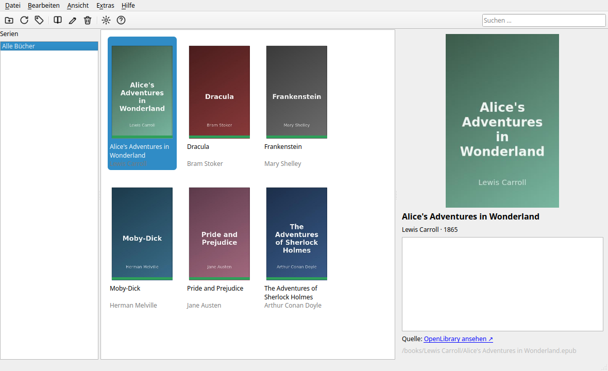

Ein Dateimanager, der nur Ebooks kennt: sichten, lesen, Metadaten holen, umbenennen, löschen. EPUB kapitelweise, PDF seitenweise, in einem Fenster.
Oberfläche auf Deutsch und Englisch, umschaltbar im laufenden Betrieb.
Ein Fenster für beide Formate: EPUB kapitelweise als Text, PDF seitenweise als gerenderte Seite. Zoom für beide (Schriftgröße bzw. Renderauflösung), Volltextsuche über alle Kapitel bzw. Seiten. Letzte Position wird gemerkt.
Titel, Autor, Serie und Cover kommen zuerst aus EPUB-OPF-Daten bzw. PDF-Dokumenteigenschaften — nicht aus einer externen Vermutung.
Ergänzt fehlende Angaben über OpenLibrary, kostenlos und ohne Key. Unsichere Treffer bleiben markiert statt falsch übernommen zu werden.
Adobe-ADEPT- oder LCP-geschützte EPUBs werden klar als Fehler markiert, statt mit leerem Titel unauffällig in der Bibliothek zu landen.
Nur auf Wunsch, nie automatisch. EPUB: temporäre Kopie, ZIP-Integritätscheck, erst dann atomarer Austausch — ein Fehler mittendrin beschädigt nie das Original.
Vorschau vor jeder Änderung. Eigene Vorlage mit Autor, Serie, Titel, Jahr.
Bücherraster mit Metadaten-Panel im laufenden Betrieb.

Fertige Pakete für Windows/macOS unter Releases — unsigniert, deshalb beim ersten Start je einmal „Trotzdem ausführen“ (Windows) bzw. Rechtsklick → Öffnen (macOS) bestätigen. Aus dem Quelltext (Linux und alle anderen) reicht Python 3.10 oder neuer:
git clone https://github.com/aaaaaprvdgrwwelt/deskkit.git
git clone https://github.com/aaaaaprvdgrwwelt/bookdesk.git
cd bookdesk
python3 -m venv .venv
.venv/bin/pip install -r requirements.txt./bookdesk.sh # oder: .venv/bin/python -m bookdesk
./install-desktop.sh # Eintrag im Anwendungsmenü anlegen (Linux)| Format | Lesen | Metadaten | Zurückschreiben |
|---|---|---|---|
| EPUB | ja, kapitelweise | OPF, inkl. Calibre-Serieninfo | ja — nur die OPF-Datei wird ersetzt |
| ja, seitenweise (PyMuPDF) | Dokumenteigenschaften | ja — inkrementell, kein Neuschreiben |
| Kürzel | Aktion |
|---|---|
F5 | Scannen |
Strg+T | Automatisch zuordnen |
Enter | Lesen |
Strg+R | Umbenennen … |
Strg+S | Metadaten in Datei speichern … |
Strg++ / Strg+- / Strg+0 | Zoom im Reader |